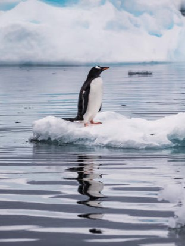
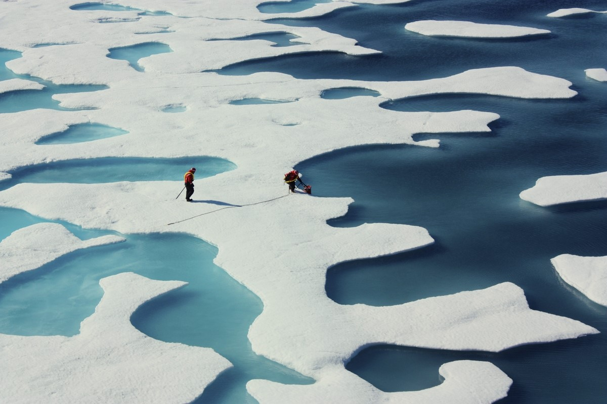
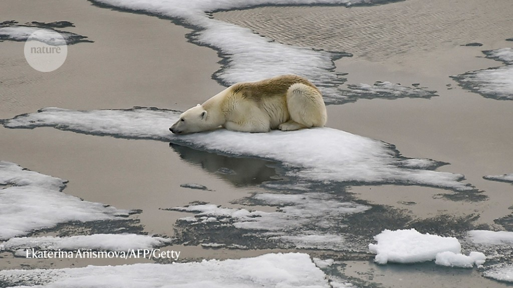

WHAT IS
MELTING
SANCTUARIES?
Melting Sanctuaries is your gateway to the mesmerizing world of glacial regions.
Dive into a treasure trove of information, stunning visuals, and comprehensive resources
that will deepen your understanding of these extraordinary environments.
IN THE WORD OF LORETTA LYNCH, "WE ALL HAVE A RESPONSIBILITY TO PROTECT
ENDANGERED SPECIES, BOTH FOR THEIR SAKE AND FOR THE SAKE OF OUR OWN
FUTURE GENERATIONS". ARCTIC ATLAS IS OUR RESPONSE TO OUR SHARED
RESPONSIBILITY, USING DIGITAL PORTAL TO HELP MAKE CHANGE - HOWEVER SMALL.

THE NUMBER OF ENDANGERED SPECIES IS RISING
As modern society continues to demand more natural
resources, wild habitats are being diminished and
wildlife numbers are declining. WWF's 2022 report
shows global wildlife populations have plummeted by
69% on average since 1970. Wildlife is in critical danger.
Polar Bear
Arctic Fox
Narwhal
Adélie Penguin
Beluga Whale
Arctic Tern
Ringed Seal
Snow Leopard
Amur Leopard
Saiga Antelope
Arctic Char
Peregrine Falcon
Bar-headed Goose
Blue Whale
Svalbard Reindeer
Alpine Ibex
African Penguin

Ptarmigan
Musk Ox
Svalbard Reindeer
Canada Lynx
Sei Whale
Climate Change
Habitat Loss
Pollution
Overexploitation
Invasive Species
Changing Ecosystems
(1970-2023)
Greenland Wildlife Populations
-94%
(1970-2023)
Antarctica Wildlife Populations
-66%
(1970-2023)
Arctic Region Wildlife Populations
-55%
(1970-2023)
Alpine Glacial Regions Wildlife Populations
-20%
There are an estimated 42,100 species threatened with extinction
ACCORDING TO THE IUCN, THERE ARE OVER 150K SPECIES ON THE IUCN RED LIST, WITH MORE THAN
42K SPECIES THREATENED WITH EXTINCTION: INCLUDING 41% OF AMPHIBIANS, 37% OF SHARKS AND
RAYS, 36% OF REEF BUILDING CORALS, 34% OF CONIFERS, 27% OF MAMMALS AND 13% OF BIRDS.
VISIT THE IUCN RED LIST

Early to Mid-20th Century
1900s: The Arctic saw increased industrial activities, primarily driven by mining and oil exploration. These activities disrupted the pristine ecosystems and habitats of Arctic wildlife, leading to localized disturbances.
1930s-1940s: This period witnessed a surge in hunting, primarily for fur and subsistence. Commercial interests drove the hunting of seals, polar bears, whales, and other Arctic species. This exploitation significantly reduced population numbers and threatened the balance of Arctic ecosystems.
Mid-20th Century: Reports surface regarding declining populations
of certain species due to hunting and habitat disruption.

Late 20th Century
1960s-1970s: Scientific studies draw attention to the accumulation of pollutants in the Arctic, with a focus on contaminants like PCBs and heavy metals. These toxins pose serious threats to Arctic wildlife through bioaccumulation in the food chain.
1973: The Convention on International Trade in Endangered Species of Wild Fauna
and Flora (CITES) comes into effect, regulating the trade of endangered species,
including some Arctic animals like polar bears.
20th Century: Research increasingly highlights the impact of pollutants on
Arctic wildlife, especially contaminants like PCBs and heavy metals.

21st Century
2000s: Scientific studies confirm accelerated decline of Arctic sea ice due to climate change, impacting polar bears, seals, and walruses reliant on ice.
2008: The polar bear is listed as threatened under the Endangered Species Act due to habitat loss from melting sea ice.
2010s: Continued decline in sea ice adversely affects the habitats of numerous ice-dependent species, causing concern among scientists and conservationists.
2015: The Paris Agreement is adopted, focusing on limiting global warming to protect vulnerable ecosystems, including the Arctic.
Late 2010s-2020s: Efforts intensify to raise awareness, conduct research, and implement conservation measures, but challenges persist due to ongoing climate change, pollution, and increased human activities in the Arctic region.